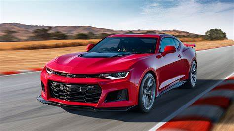
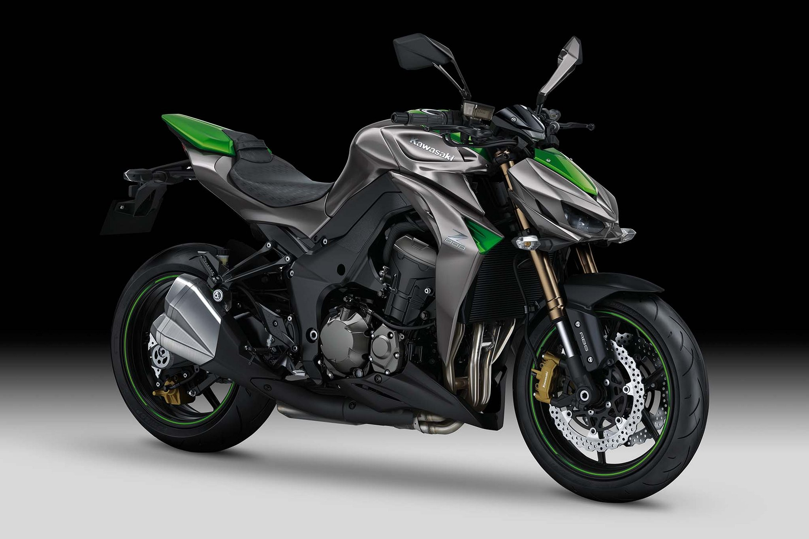
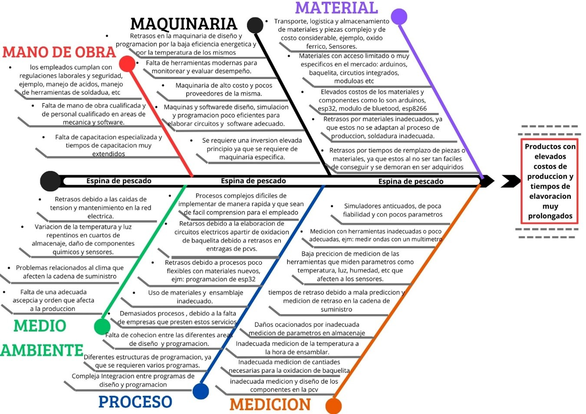
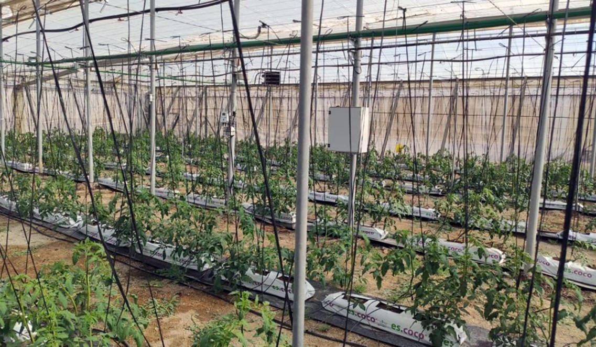
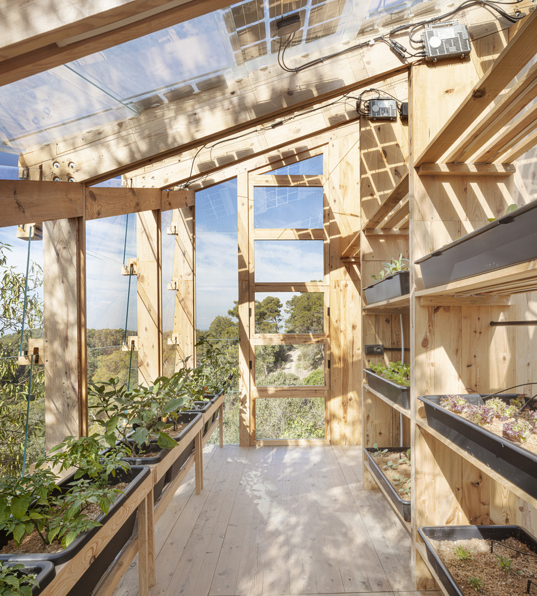
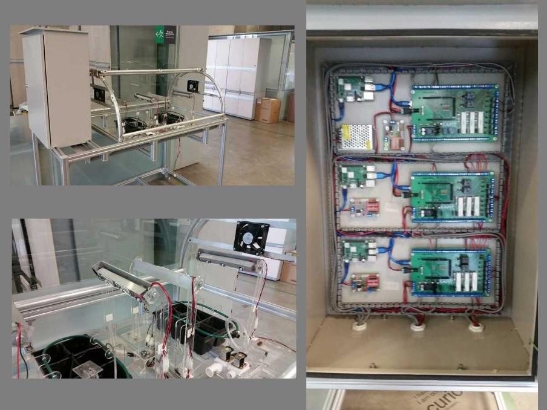
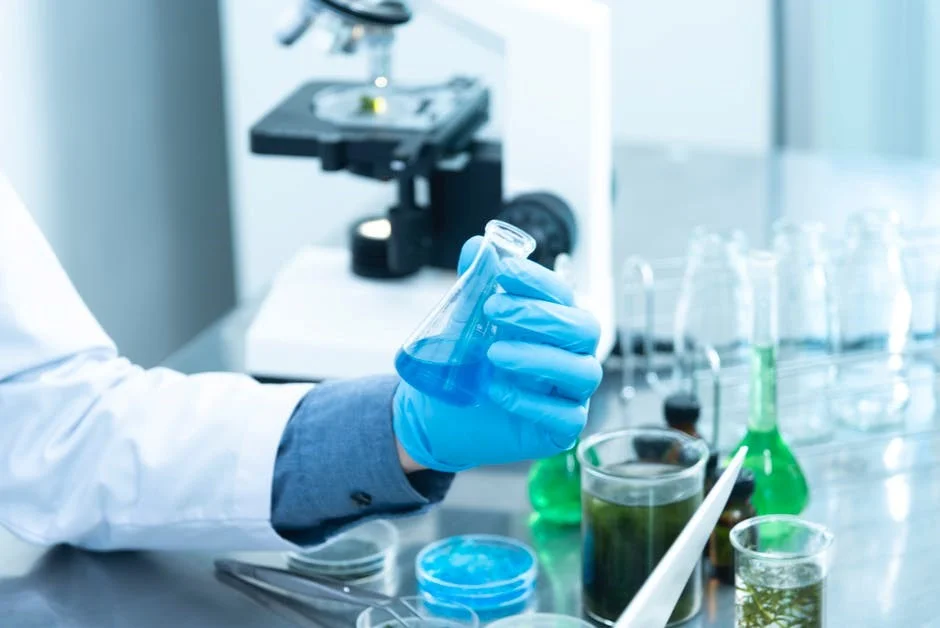
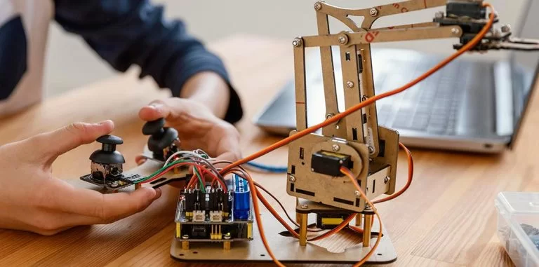
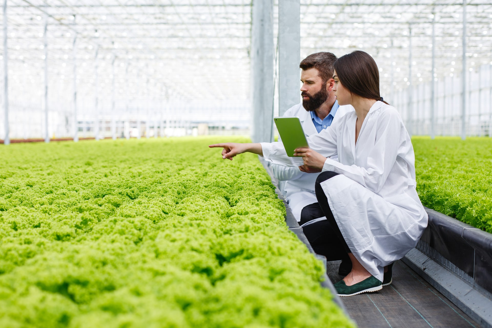

Decidimos realizar una pagina WEB para dar a conocer a las personas la importancia de nuestro proyecto y dar contexto sobre este para una facil comprension
Los cultivos al aire libre están expuestos a las fluctuaciones del clima “sequías, heladas, tormentas” lo que afecta su productividad y calidad. Existe la necesidad de un sistema que permita producir alimentos de manera controlada y estable, independientemente de las condiciones externas.
En muchas regiones, la disponibilidad de agua para la agricultura es limitada. El uso ineficiente del agua en los cultivos tradicionales genera desperdicio y problemas de sostenibilidad. Se necesita un sistema que optimice el uso del agua, reduciendo su consumo y mejorando la eficiencia
La población mundial sigue creciendo, lo que aumenta la demanda de alimentos frescos y saludables. Sin embargo, los métodos agrícolas tradicionales a menudo no pueden satisfacer estas necesidades de manera sostenible. La intensificación de la producción en terrenos limitados y el aumento de la productividad por metro cuadrado es esencial.
Objetivo General
el objetivo general de nuestro proyecto es el optimo crecimiento de los organismos vegetales dispuestos estos para que crezcan de una manera eficiente en cualquier condición de terreno, además utilizando recursos renovables haciendo un uso mínimo en el impacto ambiental, optimizando el uso de:” energía, nutrientes y agua “ para lograr una sistema autosuficiente que contribuya a la sostenibilidad económica y social .
Objetivos Específicos
- Asegurar el cultivo y crecimiento continuo de vegetales, frutas y otros productos, independientemente de las condiciones climáticas del momento
- Implementar sistemas de riego automático, modificar la temperatura en cuanto la planta lo necesite, modificar los parámetros de la temperatura
- Implementar sensores electrónicos que midan la humedad, el ph y los niveles de nutrientes en el suelo, lo que permite ajustar los sistemas de riego y fertilización para optimizar el uso del agua y mantener la salud del suelo
Integrantes Proyecto Inovador

David Santiago Lizarazo Zamudio

Franklin Stiven Rincon Murcia
Analisis Entorno Actual
El mercado de los germinadores autónomos ha crecido de la mano de la tendencia hacia la automatización en la agricultura y jardinería urbana. Factores como el aumento de la población mundial, la necesidad de mejorar la eficiencia en el riego y en la producción de alimentos y el interés por el autocultivo en espacios pequeños han impulsado esta las principales características de los germinadores autónomos incluyen:
• Sensores para monitorear y controlar la temperatura, humedad y luz
• Sistemas automáticos de riego.
• Iluminación LED ajustable, optimizada para el crecimiento vegetal.
• Integración con aplicaciones móviles para monitoreo y ajustes remoto
Conclusión Encuestas

Diagrama Espina de Pescado
Proyectos Relacionados

Automatización de la Producción Agrícola Bajo Invernadero: Una Revisión
Universidad Distrital Francisco José de Caldas sobre la automatización en la agricultura bajo invernadero explora cómo las tecnologías avanzadas pueden mejorar la eficiencia y el control de los cultivos. En base a este proyecto nos hicimos la pregunta de "que tal si nos proponemos a utilizar tecnologias de nueva generacion en estos proyectos " con esto buscamos automatizar cualquier proyecto para su crecimento y avance en el futuro

Estudiantes construyen un prototipo de invernadero ecológico, autosuficiente y escalable en Barcelona
Cuando supimos de este proyecto ,nos intrigo como lo habian construido y como se logro la utilizacion de sistemas de paneles solares ,ademas de que este no emite ningun efecto o gases como la mayoria

Invernadero IoT
Este proyecto desarrollado en la Universidad EAFIT en Medellín se enfoca en desarrollar un sistema automatizado que permite controlar y monitorear variables clave del invernadero, como la temperatura, la humedad y la luz, para optimizar el crecimiento de los cultivos. Utilizando sistemas embebidos y microcontroladores conectados a sensores, el sistema recopila datos en tiempo real y ajusta automáticamente las condiciones dentro del invernadero
Ingenierias presentes.

Ingeniería bioquímica
La denominación ingeniería bioquímica se refiere a una disciplina de la ingeniería que aplica los conocimientos en matemáticas, química, física y ciencias biológicas para el desarrollo de productos desde la investigación básica a nivel de laboratorio hasta el diseño de equipos, procesos y plantas industriales a escala comercial, donde la obtención de estos productos impliquen que los agentes de transformación de la materia sea un organismo vivo (microorganismos, células animales o vegetales) o una parte de este (enzimas, anticuerpos)también podríamos decir que es es considerada una rama de la ingeniería química que aplica los avances tecnológicos a los materiales biológicos, ésta complementa las habilidades tradicionales de la ingeniería química con estudios adicionales de biología, microbiología y bioquímica.

Ingeniería mecatrónica
La ingeniería mecatrónica es una rama multidisciplinaria de la ingeniería dedicada a automatizar maquinaria, crear productos inteligentes que faciliten la vida de las personas y armonizar componentes electrónicos y mecánicos a partir de la informática, la mecánica, los sistemas de control y la electrónica. Otro concepto de esta ingeniería es que seria es una rama multidisciplinaria de la ingeniería, la cual desarrolla dispositivos y tecnologías de varios campos del conocimiento en los que se unen las ramas de sistemas, electrónica, mecánica y control, con el uso combinado de la robótica y de la ingeniería electrónica , La mecatrónica engloba así el desarrollo de productos que involucren un sistema de control para productos o procesos inteligentes, lo cual busca crear maquinas más compleja para facilitar las actividades del ser humano a través de procesos electrónicos de sistemas de control aplicados en la industria. Los componentes requeridos en el proyecto necesitan esta ingeniería ya que se necesitan microcontroladores, motores pequeños, circuitos, entre otros, para su diseño y automatización

Ingeniería Agronómica
la ingeniería agronómica es una disciplina que combina conocimientos de ciencias agrícolas, biología, física, química y economía con el fin de optimizar la producción de alimentos, fibras, energía y otros recursos agrícolas. Los ingenieros agrónomos aplican estos principios para mejorar los procesos productivos en la agricultura, la ganadería y la agroindustria, siempre con un enfoque en la sostenibilidad, la eficiencia y el respeto por el medio ambiente. El objetivo principal de la ingeniería agronómica es contribuir al aumento de la productividad agrícola de manera sostenible, mejorando la calidad de vida de los agricultores y ayudando a garantizar la seguridad alimentaria a nivel global.
Conceptos y terminología
Germinación: Proceso en el que una semilla se desarrolla hasta convertirse en una plántula. Requiere condiciones específicas de agua, temperatura y luz.
Plántula: La fase inicial de una planta después de la germinación.
Fotosíntesis: Proceso en el que las plantas convierten la luz solar en energía química.
Transpiración: Proceso por el cual las plantas liberan agua a través de sus hojas.
Nutrición Vegetal: Provisión de nutrientes esenciales, como nitrógeno, fósforo, y potasio, necesarios para el crecimiento de la planta.
1. Fases del Crecimiento Vegetal
Sistema de Control Automático: Sistema que regula las condiciones del germinador (temperatura, humedad, luz) sin intervención humana.
Controlador PID: Un tipo de controlador utilizado para mantener una variable (como temperatura o humedad) a un valor deseado. Utiliza un algoritmo basado en Proporcional, Integral y Derivada.
Microcontrolador: Dispositivo que controla los sensores y actuadores. Ejemplos: Arduino, ESP32, Raspberry Pi.
Actuadores: Dispositivos que ejecutan acciones físicas como abrir una válvula, encender una lámpara o activar una bomba de agua.
2.Automatización y Control
3. Tipos de Germinadores Automatizados
Hidroponía: Método de cultivo que utiliza soluciones acuosas ricas en nutrientes en lugar de tierra. Acuaponía: Sistema que combina el cultivo de plantas y peces, utilizando los desechos de los peces como fertilizante para las plantas. Aeroponía: Sistema en el que las raíces de las plantas están suspendidas en el aire y se rocían con una solución nutritiva.
4.Parámetros Ambientales
Fotoperiodo: Cantidad de horas de luz que recibe una planta cada día, lo cual afecta su crecimiento y ciclo de vida. Temperatura Óptima: Rango de temperatura ideal para la germinación de las semillas y el crecimiento de las plantas (generalmente entre 18°C y 25°C). Humedad Relativa: Cantidad de vapor de agua en el aire en relación con la temperatura. Las plantas jóvenes suelen requerir una humedad más alta.
Normativas Germinadores
- Las normativas establecen requisitos estructurales y de seguridad para la construcción de invernaderos. Estos incluyen: Ventilación y control de temperatura: Se regulan los sistemas de ventilación para asegurar el control adecuado del ambiente interno, que proteja tanto los germinados como la salud de los clientes. Iluminación: Se puede requerir un nivel adecuado de iluminación tanto natural como artificial, según los germinados y las condiciones locales.
- Los invernaderos, como cualquier actividad agrícola, deben cumplir con una serie de regulaciones ambientales que buscan minimizar el impacto en los ecosistemas. Estas normativas abarcan: Gestión del agua: Las normativas regulan el uso eficiente del agua, exigiendo sistemas de riego tecnificados como riego por goteo. En algunas regiones, se puede requerir un plan para el manejo de aguas residuales y la reutilización del agua. Gestión de desechos: Se regulan los métodos para la gestión y disposición de residuos, como desechos orgánicos, plásticos y otros materiales, promoviendo prácticas de reciclaje y compostaje.
- Los germinadores deben cumplir con regulaciones fitosanitarias que garantizan la calidad de los productos agrícolas y previenen la propagación de plagas y enfermedades: Control de plagas: Se requiere el cumplimiento de un programa de Manejo Integrado de Plagas (MIP) para minimizar el uso de pesticidas y garantizar la salud de los cultivos y del entorno. Normas de bioseguridad: Pueden exigirse medidas de bioseguridad, como barreras físicas o procedimientos de higiene, para evitar la introducción de enfermedades en el invernadero. Certificaciones de calidad: En muchos países, los productos que se cultivan en invernaderos deben cumplir con estándares de calidad que se verifican mediante certificaciones fitosanitarias o de agricultura orgánica, dependiendo de los objetivos del productor.
- En algunos lugares, se promueven políticas de sostenibilidad para los invernaderos, con el fin de reducir el consumo energético y el uso de recursos. Estas normativas incluyen: Normas de eficiencia energética: Se incentiva o regula el uso de fuentes de energía renovables, como paneles solares, y la optimización del uso de la electricidad mediante germinador LED y sistemas automatizados. Certificaciones de sostenibilidad: Los germinadores que buscan operar bajo estándares internacionales pueden solicitar certificaciones de sostenibilidad (como Global GAP, LEED, o ISO 14001) que garantizan el cumplimiento con buenas prácticas ambientales y de producción.
- Colombia: En Colombia, la Ley 1259 de 2008 regula la producción agrícola, incluyendo normas sobre el manejo de residuos sólidos y fitosanitarios en los invernaderos. También se promueven prácticas agrícolas sostenibles mediante políticas gubernamentales y programas de apoyo para pequeños productores.
1. Normas de ambiente e iluminación
2. Normas medioambientales
3. Normas fitosanitarias
4. Eficiencia energética y sostenibilidad
5. Normativas específicas por país
Referencias Bibliograficas
https://repositorio.upse.edu.ec/bitstream/46000/10896/1/UPSE-TIA-2024-0005.pdf
https://repositorio.iberopuebla.mx/bitstream/handle/20.500.11777/5691/Invernadero_automatizado_uso_domestico_mpdalidadprototipo_articulopdf_final.pdf?sequence=1
https://repositorio.uan.edu.co/bitstream/123456789/2291/2/2020DilberPeraltaSuarezBrayanFabianVargas.pdf
https://www.cocopot.es/blog/consultas-hortelanas/10-sencillos-pasos-para-sembrar-en-un-germinador
https://ridder.com/es/noticias/cuatro-tecnologias-para-el-invernadero-autonomo/
https://normas-apa.org/referencias/ejemplos/
https://repositorio.unimagdalena.edu.co/handle/123456789/2080
https://repositorio.utp.edu.co/bitstreams/eb85934d-b4ba-4744-aee7-48ed17e66019/download
https://repository.udistrital.edu.co/handle/11349/29639